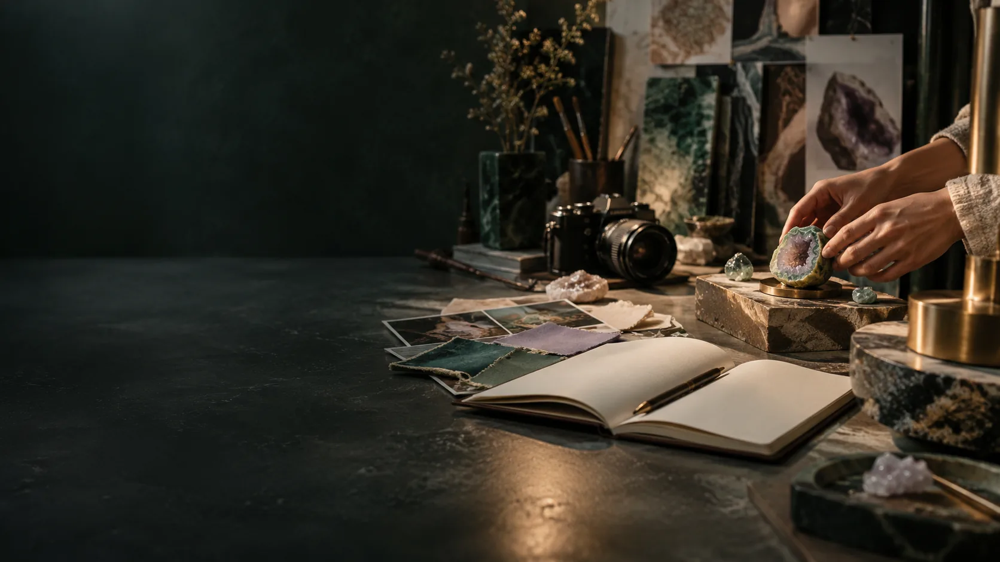

ABOUT / EDITORIAL METHOD AND RIGHTS
An atlas for work in progress.
A public exploration of Aura Genesis, Geode development and teacher learning, based on the three supplied October 2026 design documents.
Direction and authorship.
Luke Nathan Hayes directs Aura of Intelligence. This site presents the three October 2026 design documents and subsequent project requirements, including the existing seated-HBOT pathway.
Image credits.
AI-generated chapter artwork is labelled as concept imagery. The existing-HBOT chapter uses credited manufacturer photographs linked to the original product pages. The repository records image prompts and sources.
Useful boundaries.
This website provides project information and proposed learning experiences. Pressure treatment, equipment modifications and human research follow the actual qualified teams and applicable review. No pressure-setting, oxygen prescription or individual medical recommendation is supplied.
Privacy of the website itself.
The site has no account, analytics, camera, microphone capture or backend. Optional learning bookmarks remain in this browser’s local storage and have a clear reset control. These site bookmarks are separate from the proposed Genesis recording architecture. Manufacturer photographs load directly from their source websites, which receive the usual image requests.
Rights and attribution.
Original source documents and the Aura project identity retain their existing rights. Third-party papers and websites remain with their respective rights holders and are linked with attribution. No open-source licence is inferred for supplied material. The repository includes the Strange But True Public Source Licence, an explicit rights notice and the image prompt record. The footer links to the complete licence.